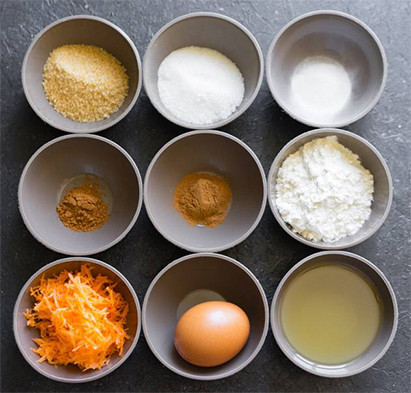
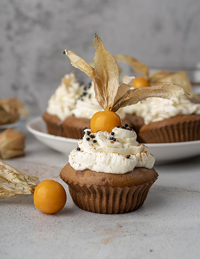

Ингредиенты:
- Мука — 150 г.
- Морковь тертая — 180 г.
- Апельсин — 1 шт.
- Яйца — 2 шт.
- Сахар — 200 г.
- Соль — 1 щепотка г.
- Корица — 7,5 г
- Мускатный орех — 1 ч.л.
- Молотый имбирь — 1/2 ч.л.
- Разрыхлитель — 8 г.
- Масло растительное — 120 мл.
- Масло сливочное — 1 ст.л
- Грецкие орехи — 100 г.
- Творожный сыр — 50 г.
- Сметана 15% — 50 г.
- Сахарная пудра — 70 г.

Способ приготовления:
- Сначала подготовим орехи. Обжарим их на сухой сковороде примерно 7-10 минут. Сразу же смешаем с маслом и солью и уберем остывать, можно поставить в морозилку. После этого порубим.
- С апельсина снять цедру и выдавить сок. В одной глубокой миске смешать все жидкие ингредиенты: сок апельсина, растительное масло, 2 яйца и добавить туда же сахар. Все тщательно перемешать венчиком.
- В другой глубокой миске смешать сухие ингредиенты: муку, разрыхлитель, корицу, имбирь и цедру апельсина. Перемешать ингредиенты венчиком для равномерного их распределения. А затем соединить содержимое двух мисок и тщательно все перемешать. Следом добавить натертую морковь и грецкие орехи, снова перемешать.
- Духовку разогреть до 190°C. Взять форму для выпечки (можно для кексов из силикона), заполнить форму тестом на 2/3.Выпекать кекс в течение 40 минут, готовность проверять деревянной шпажкой — она должна выходить сухой. По готовности остудить кекс на решетке, а пока кекс будет остывать, приготовить соус.
- Приготовление соуса. В миске взбить миксером творожный сыр (типа Альметте) с половиной сахарной пудры около минуты. Затем добавить сметану и оставшуюся пудру, снова все взбить до состояния, напоминающего сгущенное молоко.
- Полить соусом остывший кекс и можно наслаждаться!

Контакты
Можете связаться со мной по: E-mail.
Наверх